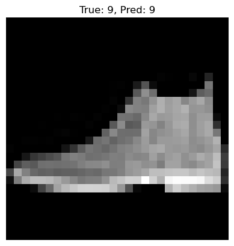
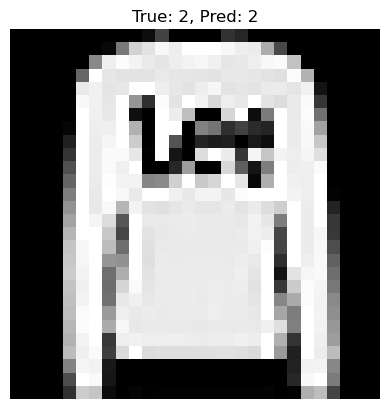
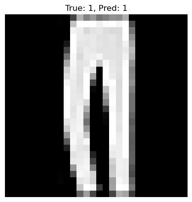
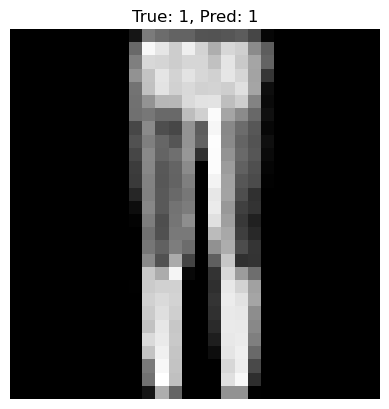
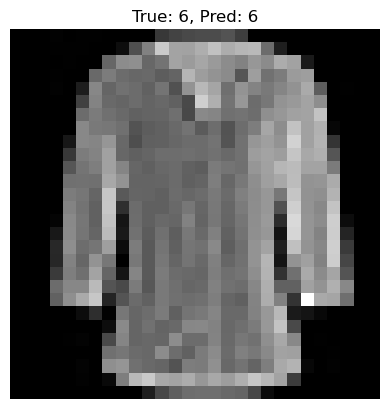

import matplotlib.pyplot as plt
import tensorflow as tf
from tensorflow.keras.datasets import fashion_mnist
from tensorflow.keras.models import Sequential
from tensorflow.keras.layers import Dense, Flatten
from tensorflow.keras.utils import to_categorical
from tensorflow.keras.optimizers import Adam
from tensorflow.keras.callbacks import EarlyStopping
from tensorflow.keras.regularizers import l2
from tensorflow.keras.datasets import fashion_mnist
import pandas as pd
import numpy as np
(x_train, y_train), (x_test, y_test) = fashion_mnist.load_data()
Downloading data from https://storage.googleapis.com/tensorflow/tf-keras-datasets/train-labels-idx1-ubyte.gz
29515/29515 ━━━━━━━━━━━━━━━━━━━━ 0s 1us/step
Downloading data from https://storage.googleapis.com/tensorflow/tf-keras-datasets/train-images-idx3-ubyte.gz
26421880/26421880 ━━━━━━━━━━━━━━━━━━━━ 5s 0us/step
Downloading data from https://storage.googleapis.com/tensorflow/tf-keras-datasets/t10k-labels-idx1-ubyte.gz
5148/5148 ━━━━━━━━━━━━━━━━━━━━ 0s 1us/step
Downloading data from https://storage.googleapis.com/tensorflow/tf-keras-datasets/t10k-images-idx3-ubyte.gz
4422102/4422102 ━━━━━━━━━━━━━━━━━━━━ 1s 0us/step
plt.figure(figsize=(8, 3))
for i in range(5):
plt.subplot(1, 5, i + 1)
plt.imshow(x_train[i], cmap='gray')
plt.axis('off')
plt.show()
x_test[0].shape
(28, 28)
# 2. Normalize pixel values to [0,1]
x_train = x_train.astype('float32') / 255.0
x_test = x_test.astype('float32') / 255.0
# 3. Reshape if needed — for ANN we flatten anyway
# x_train shape: (60000, 28, 28)
# 4. Convert labels to one-hot encoding
num_classes = 10
y_train_ohe = to_categorical(y_train, num_classes)
y_test_ohe = to_categorical(y_test, num_classes)
# 5. Build simple ANN model
model = Sequential([
Flatten(input_shape=(28, 28)),
Dense(128, activation='relu'),
Dense(64, activation='relu'),
Dense(num_classes, activation='softmax')
])
# 6. Compile model
model.compile(optimizer='adam',
loss='categorical_crossentropy',
metrics=['accuracy'])
# 7. Train
history = model.fit(x_train, y_train_ohe,
validation_split=0.2,
epochs=10,
batch_size=128,
verbose=2)
# 8. Evaluate
test_loss, test_acc = model.evaluate(x_test, y_test_ohe, verbose=2)
print("Test accuracy:", test_acc)
# 9. Display some predictions
preds = model.predict(x_test[:5])
for i in range(5):
plt.imshow(x_test[i], cmap='gray')
plt.title(f"True: {y_test[i]}, Pred: {np.argmax(preds[i])}")
plt.axis('off')
plt.show()
Epoch 1/10
C:\Users\sangouda\AppData\Roaming\Python\Python312\site-packages\keras\src\layers\reshaping\flatten.py:37: UserWarning: Do not pass an `input_shape`/`input_dim` argument to a layer. When using Sequential models, prefer using an `Input(shape)` object as the first layer in the model instead.
super().__init__(**kwargs)
375/375 - 6s - 15ms/step - accuracy: 0.5462 - loss: 1.3313 - val_accuracy: 0.7031 - val_loss: 0.8472
Epoch 2/10
375/375 - 2s - 5ms/step - accuracy: 0.7353 - loss: 0.7355 - val_accuracy: 0.7599 - val_loss: 0.6532
Epoch 3/10
375/375 - 2s - 5ms/step - accuracy: 0.7691 - loss: 0.6260 - val_accuracy: 0.7783 - val_loss: 0.6030
Epoch 4/10
375/375 - 2s - 5ms/step - accuracy: 0.7888 - loss: 0.5783 - val_accuracy: 0.7958 - val_loss: 0.5584
Epoch 5/10
375/375 - 2s - 5ms/step - accuracy: 0.8041 - loss: 0.5444 - val_accuracy: 0.8075 - val_loss: 0.5333
Epoch 6/10
375/375 - 2s - 5ms/step - accuracy: 0.8144 - loss: 0.5193 - val_accuracy: 0.8172 - val_loss: 0.5155
Epoch 7/10
375/375 - 2s - 5ms/step - accuracy: 0.8231 - loss: 0.4985 - val_accuracy: 0.8233 - val_loss: 0.4954
Epoch 8/10
375/375 - 2s - 6ms/step - accuracy: 0.8292 - loss: 0.4805 - val_accuracy: 0.8288 - val_loss: 0.4792
Epoch 9/10
375/375 - 2s - 5ms/step - accuracy: 0.8357 - loss: 0.4648 - val_accuracy: 0.8280 - val_loss: 0.4709
Epoch 10/10
375/375 - 2s - 5ms/step - accuracy: 0.8393 - loss: 0.4525 - val_accuracy: 0.8357 - val_loss: 0.4581
313/313 - 1s - 2ms/step - accuracy: 0.8273 - loss: 0.4844
Test accuracy: 0.8273000121116638
1/1 ━━━━━━━━━━━━━━━━━━━━ 0s 77ms/step




